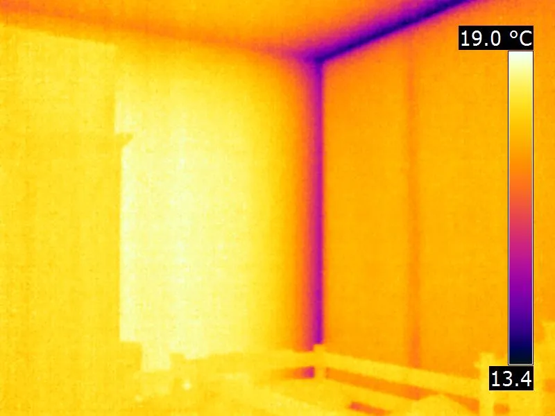
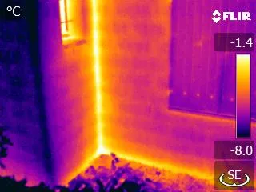

Modeling Thermal Bridges with Energy2D
By Charles Xie ✉
Listen to a podcast about this article
In architectural engineering, a thermal bridge is an area or element where thermal energy conducts faster than the surrounding areas or elements, creating a "fast lane" for heat transfer. There are two types of thermal bridge: material thermal bridge and geometric thermal bridge. The physics behind these two types of thermal bridge are in fact quite different. In this article, I will use Energy2D simulations to illustrate these concepts.
Material thermal bridges
A material thermal bridge is formed by an area or element of a building that has a higher thermal conductivity than the surrounding, such as a steel stud inside an otherwise insulated wall. Figure 1 shows this.

Figure 1: A material thermal bridge formed by a steel stud in a wall
Many balconies in buildings are simply extensions of the concrete slab that forms the interior floor or separate slabs connected with the interior floor through uninsulated joints, creating thermal bridges shown in Figure 2.

Figure 2: Balcony as a thermal bridge
Geometric thermal bridges
One of the mysterious things that causes people to scratch their heads when they see an infrared thermal image of a room is that the junctions such as edges and corners formed by two exterior walls (or floors and roofs) often appear to be colder in the winter than other parts of the walls, as is shown in Figure 3.

Figure 3: An infrared thermal image of a geometric thermal bridge formed by a wall junction (Image credit: Stefan Mayer)
A typical explanation of this phenomenon is that, because the exterior surface of a junction (where the heat is lost to the outside) is greater than its interior surface (where the heat is gained from the inside), the junction ends up losing thermal energy in the winter more quickly than a straight part of the walls, causing it to be colder. Such a junction is called a geometric thermal bridge, which is different from the material thermal bridge introduced above.
The heat transfer process through a geometric thermal bridge is a little confusing. While a wall junction does create a difference in the surface areas of the interior and exterior of the wall, it also forms a thicker area through which the heat must flow through (the area is thicker because it is in a diagonal direction). The increased thickness should impede the heat flow, right?
Unsure about the net outcome of these competing factors, I made some Energy2D simulations to see if they can enlighten me. Figure 4 shows the first one that uses a block of object remaining at 20°C to mimic a warm room with four walls and the surrounding environment at 0°C. Temperature and heat flux sensors are placed at a corner, as well as the middle point of a wall. The results show that the corner is indeed colder than the middle part of a wall. Heat flux results suggest that the corner loses heat faster than the middle part in the stable state.

Figure 4: Geometric thermal bridges at the wall junctions
What about more complex shapes like an L-shaped wall that has both convex and concave junctions? Figure 5 shows an infrared thermal image of such a wall junction, taken from the outside of a house. In this thermal image, the convex edge appears to be colder, but the concave edge appears to be warmer!

Figure 5: An infrared thermal image of the geometric thermal bridges of an L-shaped wall (Image credit: Stefan Mayer)
The Energy2D simulation in Figure 6 shows a similar pattern like the thermal image. The simulation results show that the temperature sensor placed near the concave edge outside the L-shape room does register a higher temperature than other sensors.

Figure 6: Geometric thermal bridges of an L-shaped wall
Conclusion
While the material thermal bridge is easy to understand, the geometric thermal bridge is not as intuitive. This article shows the power of Energy2D simulations for helping us understand the latter.